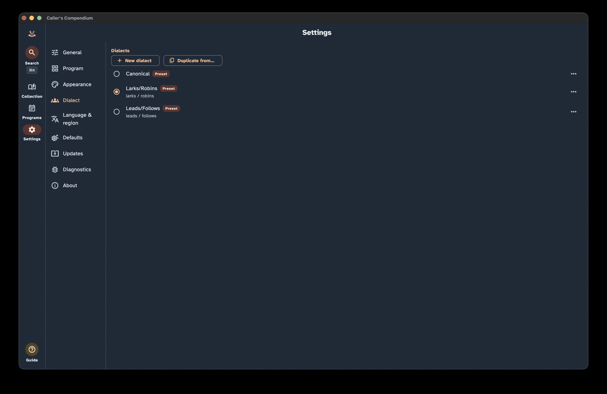

Settings
Settings is where you tune Caller's Compendium to fit the way you work — how your library sorts, how dances look on stage, which dialect names appear, and how the app protects your data. Most of what you'll find here has a dedicated guide of its own, so think of this page as a tour: it shows you where each control lives and points you to the details.
Finding your way around these words. On-screen buttons and screens are written in bold — like Settings, Appearance, and Defaults. The first time a dance term appears it links to the Glossary, so you can get a plain-language definition without losing your place.
The Settings Dialect section with the section list beside controls for the active dialect and custom wording.

Finding Settings
Settings is a top-level destination, marked with a gear icon and labelled Settings. On a narrow screen (like a phone) it's a tab in the bottom navigation; on a wide screen (a tablet or desktop) it's in the side navigation rail.
Inside, a list of sections sits beside the controls for the section you've chosen. On a narrow screen you pick a section and it opens as its own page, then you step back to switch sections. There are ten sections, always in this order:
- General
- Program
- Appearance
- Dialect
- Language & region
- Defaults
- Updates
- Diagnostics
- Experimental
- About
General
The General section gathers everyday behavior into small groups.
Library
- Ignore leading articles when sorting (on by default) — alphabetizes titles by their first meaningful word. With this on, "The Nice Combination" files under N, not T.
Accessibility
- Reduce motion — trims animations and movement. Follows your device's system Reduce Motion setting by default; flip this switch to override it either way.
- Always show verbose figure text — shows the full spoken-style figure wording on screen in the dance view, not only to screen readers. Turn it off for the terse notation. This affects the dance view; Perform mode has its own text-size controls.
- Show turns as decimals — shows turn and rotation amounts as decimals (0.75) instead of fractions (¾). Screen-reader wording is unaffected.
- Confirm before delete — adds a prompt before you delete a dance or program. Deletes are still undoable either way.
These are the highlights; the Accessibility guide gives you the full picture.
Deleted items
- Keep deleted dances for — choose 30 days, 60 days, 90 days, or Never (default is 30 days). Deleted dances are held for this long and then purged. For how soft-delete and restore work, see Collection & search.
Import
- Import dances — the entry point for bringing dances in from other sources. See Imports & migration.
- Published collections — browse signed collections from the trusted catalog and send one through the review flow. See Imports & migration.
- Re-check custom figures — re-reads imported dances whose figures were kept as plain custom text only because the app couldn't recognise them at the time. You preview and confirm before anything changes, and your tags, ratings, and notes are preserved. See Write & edit dances.
Backup & restore
- Export a backup and Restore from a backup — save a copy of everything or bring a copy back.
- Backup reminder — set to Off, Weekly, or Monthly, with a "last backup" date so you know where you stand.
For the whole workflow, see Backup & portability.
Program
The Program section gathers the settings that shape how you build, check, and perform your programs — venues, the programming matrix, Perform mode, and calling history.
Venues
- Use reusable venue records (off by default) — turns a program's venue into a reusable record with address, contacts, and schedule that many programs can share and you edit in one place. When off, a program's venue is a simple free-text field. Switching is lossless and reversible: your typed venue text and any linked record are both kept, so flipping the toggle never discards either.
- Manage venues — browse, edit, and delete your saved venue records. You can also add a venue on the fly while editing a program (when reusable venue records are on). Deleting a venue is permanent — unlike a deleted dance, it isn't held for later restore. To keep you from stranding a program, a venue can't be deleted while any program is still linked to it; change or remove the venue on those programs first, then delete it.
Whether the toggle is on or off, a program that's linked to a saved venue always shows and exports that venue's full details (the linked record wins over free text). See Programs for how the venue field behaves in each mode, and Share, print & export for how venue contact details are handled when you export.
Programs
Flag exact beat overlap only (on by default) — controls how the programming matrix's alert marker decides that a move repeating in two back-to-back dances is worth a second look. On (the default), only a move whose beats actually overlap between the two dances is flagged. Off, any move that merely lands in the same named phrase (A1, A2, B1, B2…) is flagged, even if its beats don't overlap at all — this was the matrix's original behavior. The screen legend and the printed PDF legend always agree with whichever mode is on.
Matrix columns — opens a dedicated editor for the columns of the programming matrix. These changes are saved and apply to every program, both on screen and in the printed PDF — distinct from the per-session eye icon in a matrix's own header, which only hides a column until you reopen that program. In the editor you can:
- Reorder columns by dragging the handle on the left of each row.
- Rename a column with a name that suits your callers; leave the field empty to fall back to the built-in name (shown as a hint).
- Remove a column you never use, or restore one you removed earlier — removed columns stay listed here (struck through) so you can always bring them back.
- Restore removed columns brings back everything you removed and returns the built-in columns to their original order, while keeping your renames and any custom columns.
- Restore all defaults clears every customisation and returns the matrix to how it ships. Because it discards your renames and custom columns, it asks you to confirm first.
Performance
- Auto-size Perform cards (on) — scales each card so it fits the screen in Perform mode. Turn it off when you'd rather size the text yourself using the A− and A+ buttons while performing. See Perform mode for more.
Calling history
- Require "mark performed" for calling history (off) — when on, a dance's calling history lists only the programs whose slot was actually marked performed, rather than every program the dance appears in.
- Track calling history for all callers (off) — when off and you've set a default caller for new programs, a dance's calling history and "called ×N" counts include only programs led by that caller (plus any programs with no caller recorded, which are treated as your own). Turn it on — or leave the default caller blank — to track every program that contains the dance. Matching ignores surrounding spaces and letter case, and applies on top of the Require "mark performed" setting (both must pass).
Appearance
The Appearance section controls how the app looks.
Theme
A gallery of built-in themes: System (follows your device), Light, Dark, and a set of named color palettes, including high-contrast and editor-inspired schemes. Selecting a theme previews and applies it right away. There's a High Contrast theme for maximum legibility — see the Accessibility guide for when it helps.
Custom themes
- New custom theme — opens an editor seeded from your current theme, so you start from something familiar. You can tune any colour in it.
- Saved custom themes can be selected, edited, duplicated, or deleted at any time. They are saved on this device.
Easter eggs
- Colour-named dances tint the theme (off by default) — a playful surprise: open a dance whose title names a colour, like Baby Rose or Blue Boy, and its view is tinted that colour. It steps aside when a high-contrast theme is active, so readability always wins.
Set lists
- Colour-code set-list rows — tints each dance row in a program's set list (both the read-only summary and the builder) by its formation family — contras, triplets, mixers, circles, and squares each get their own accent, so you can read the shape of a program at a glance. Dances marked as mixers always get the mixer accent regardless of their formation, so a mixer-flagged Duple Improper reads as a mixer rather than a contra. The formation (and "Mixer" when applicable) is always shown as text on the row too, so rows stay fully readable without relying on colour, and the accents adapt to the High Contrast theme. On by default; turn it off to hide the tints.
Formation colours
- Formation label colours — highlight individual formations in your own colours (for example Becket clockwise in yellow and Becket counter-clockwise in pink). Your choices show on dance cards, in dance detail, and in the Perform header.
Tag colours
- Tag colours — give a tag its own colour so it stands out wherever it appears, on dance cards and in dance detail. Only the tags you colour change; every other tag looks exactly as it does now. The tag's name is always shown beside the colour, so tags stay readable without relying on colour, and the app picks a black or white label automatically so your colour stays legible in every theme.
Dialect
The Dialect section is your library of dialects — the role names and wording the app uses when it describes dances.
- Preset dialects are read-only, but you can Duplicate to customize to make your own version.
- Custom dialects can be edited, renamed, or deleted.
- One dialect is active at a time.
This is just the entry point — see Dialect for the full story on choosing and customizing wording.
Language & region
The Language & region section handles formats and localization.
Formats
Date format — choose System default, Year-month-day, Day/month/year, Month/day/year, or Custom…. A live example shows the result, and your choice controls how program event dates appear.
A custom pattern is built from these tokens:
Token Meaning yyyyoryyYear MMMonth as digits MMMMonth as a short name MMMMMonth as a full name dorddDay Separate them with a hyphen, slash, dot, comma, or space. If a pattern isn't recognised the app says so and falls back to the system default until you correct it.
First day of week — choose System default, Sunday, Monday, or Saturday. This sets which day starts the week in the date views the app draws for itself — today that is the "this week" strip at the top of the Programs list, which reorders the moment you change the setting. Date entry still uses the system picker, which follows the app's active language.
Language
- App language — choose System default or one of the bundled languages (currently English, German, French, Japanese, Danish, and Dutch). Changing it re-renders the app immediately and is remembered next time you open the app. Your dance content — figure and call wording — is governed by your chosen dialect, independent of the interface language.
Defaults
The Defaults section sets the starting points for new items. Every default here can still be changed on each item later — they just save you repetitive setup.
Program defaults
- Default caller and Default band — prefilled into each new program, and editable per program.
Display defaults
- Collection sort order — the default order for your library when you open it. You can still change the sort while browsing.
- Open dance details in canonical terms — when on, dances open showing their canonical role and move names instead of your active dialect. You can still switch views on the dance while it is open.
Dance-authoring defaults
These help if you write your own dances. Keep in mind you can override any of them per dance. Write & edit dances covers them in context.
- Free-text entry — when on, adding a figure lets you type a whole line (for example "neighbor balance & swing") instead of building it field by field.
- Figure shorthands — map short tokens to one or more figures you can insert during free-text entry. See Figure shorthands.
- Form, Formation, and Progression — the starting choices for a new dance.
- Default phrase structure — leave blank for the standard 4×16 A1 A2 B1 B2, or set your own.
- Starting figures — the figures a new dance begins with; defaults to a single stand still of eight beats. Clear it for a blank new dance.
- Move defaults — preferred parameter values applied automatically when you insert a move while writing. These override that move's built-in defaults, and you can still change any parameter afterwards.
- Aggressively recompute figure beats (off by default) — when on, changing a figure's move or a parameter that affects timing recalculates its beat count immediately, even overwriting a beat count you typed in by hand. When off, a beat count you've edited is never changed automatically.
- Walkthrough snippets — a personal, per-figure library of your own walkthrough wording. The app saves the text you write for a figure and offers it again wherever that figure appears. Manage the whole library from here: review it, Edit snippet, or delete one. Deleting removes the saved default only — dances keep any walkthrough text you already wrote. See Walkthrough.
Updates
The Updates section lets the app tell you when a newer version is out — and, on desktop, help you install it. Nothing here happens behind your back: the app never updates itself automatically, and no update is ever downloaded or installed without you choosing to.
- Check for updates — check right now, any time. It shows the version you're on and whether a newer one is available. If it can't reach the update service it simply reports that no update was found, so a checkup never interrupts you with an error.
- Beta channel (off by default) — turn this on to be offered pre-release beta versions. Left off, you're only offered stable releases.
- Check automatically (off by default) — when on, the app quietly checks for a newer version as it starts up. Left off, checking only happens when you ask.
When an update is available, a dismissible banner points you to the release so you can read what's new before deciding.
On desktop, once an update is found you can Download & install update: the app downloads it, verifies it hasn't been tampered with, then hands it to your system's installer to finish — it never replaces itself in place. On phones and tablets, the banner's link takes you to the release to download it the usual way for your platform.
Your privacy is built in: an update check downloads a small version file over a secure connection and nothing else. No information about you, your device, or how you use the app is ever sent.
Diagnostics
When something goes wrong, the app writes a short technical note to a log on your own device — not just outright crashes, but also errors you see reported on screen (like a failed import). It is never sent anywhere — there is no telemetry. The Diagnostics section is where you read that log, hand a copy to a bug report, or wipe it.
Recent entries
A list of the most recent entries, newest first, so you can see whether anything was captured around the time the trouble happened. If nothing has ever gone wrong you'll see No errors recorded. If the log can't be read, the app says so and still lets you try to export or clear it.
Export
- Include full detail (may contain your content) — off by default. Left off, the export removes your content, file paths, email addresses, and phone numbers. Turn it on only when you mean to share the full, unredacted log.
- Export / share log — hands the log to your system's share or save dialog. The row tells you which kind you're about to send: a scrubbed copy safe to attach to a bug report, or the full unredacted log. If the app can't prepare a safe scrubbed copy it saves nothing and tells you, rather than sending more than you asked for.
If there is nothing in the log, the app says No diagnostics to export instead of producing an empty file.
Clear log
- Clear log — deletes the local crash log from this device. The app asks first and is blunt about it: this cannot be undone.
Filing a bug? A scrubbed log attached to a GitHub issue is the most useful thing you can send.
Experimental
The Experimental section is a home for features that are still in development. It may be empty, and anything that appears there can change before it becomes a regular setting.
About
The About section tells you what you're running and where it comes from.
- App name, Version, and the app's tagline.
- A User guide link that opens the built-in offline guides — the same pages you're reading now.
- License info: the app is free software under AGPL-3.0, with View source on GitHub.
- Bundled-font credits — Fraunces, Atkinson Hyperlegible, and Roboto, under the SIL Open Font License.
- Theme-palette and dance-data attributions, including The Caller's Box (CC BY-NC).
- View licenses — the full license texts.
Where to go next
- Dialect — customize the role names and wording your dances use.
- Backup & portability — export, restore, and set backup reminders.
- Imports & migration — bring dances in from other sources.
- Accessibility — reduce motion, verbose figure text, high-contrast themes, and more.
- Write & edit dances — authoring defaults, shorthands, and walkthrough snippets in context.
- Collection & search — custom fields and restoring deleted dances.